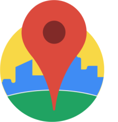

To see the documentation please follow this link: https://eis.dke.univie.ac.at/eis2021/details/?id=479
There are currently 3 main endpoints available:
Endpoint 1: places/byAdress/{streetName}/{houseNumber}/{radius}
Endpoint 2: places/byCategorie/{streetName}/{houseNumber}/{radius}/{categorie}
Endpoint 3: places/getSubcategories/{mainCategory}
Please visit the documentation for to learn more about the endpoints.